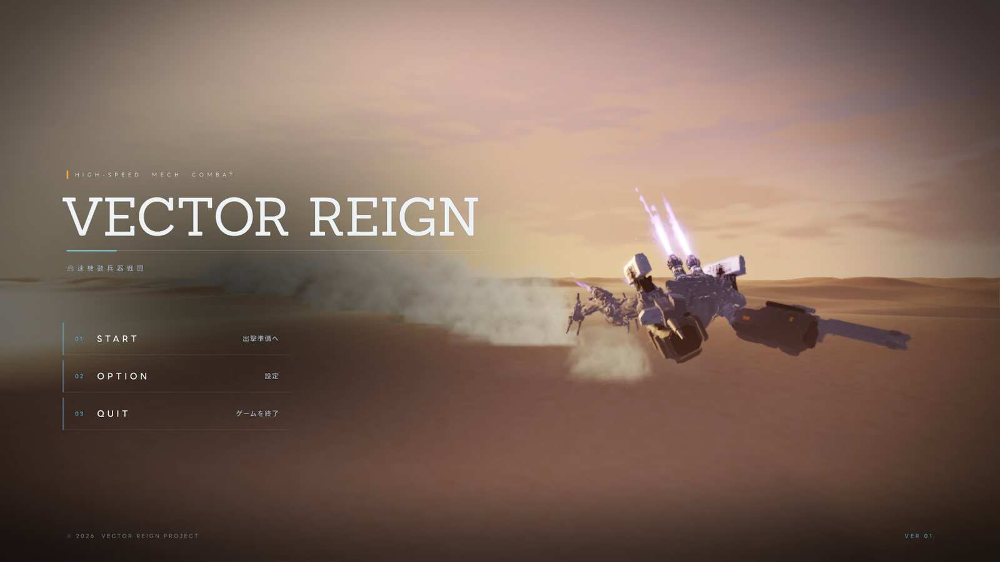
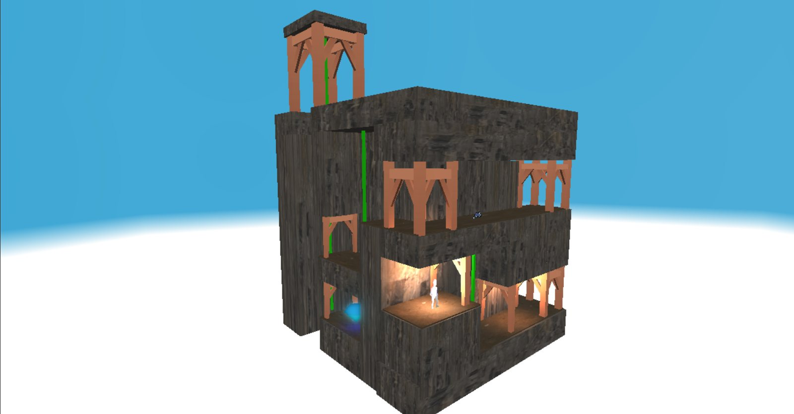
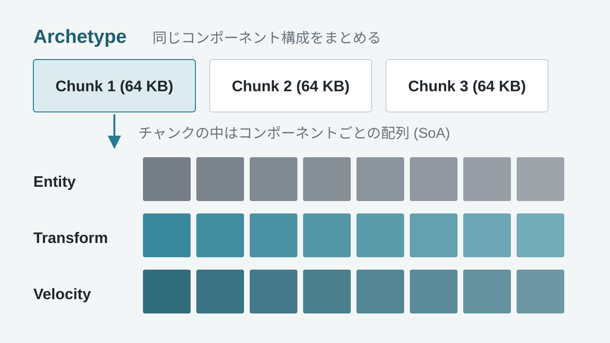
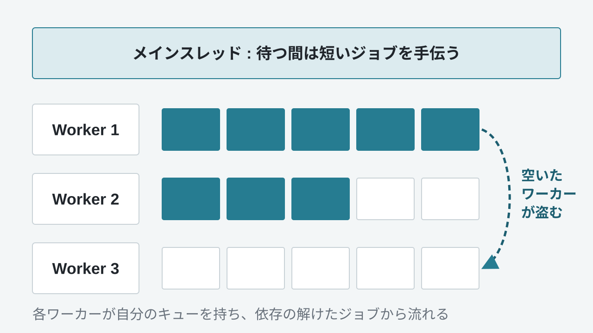
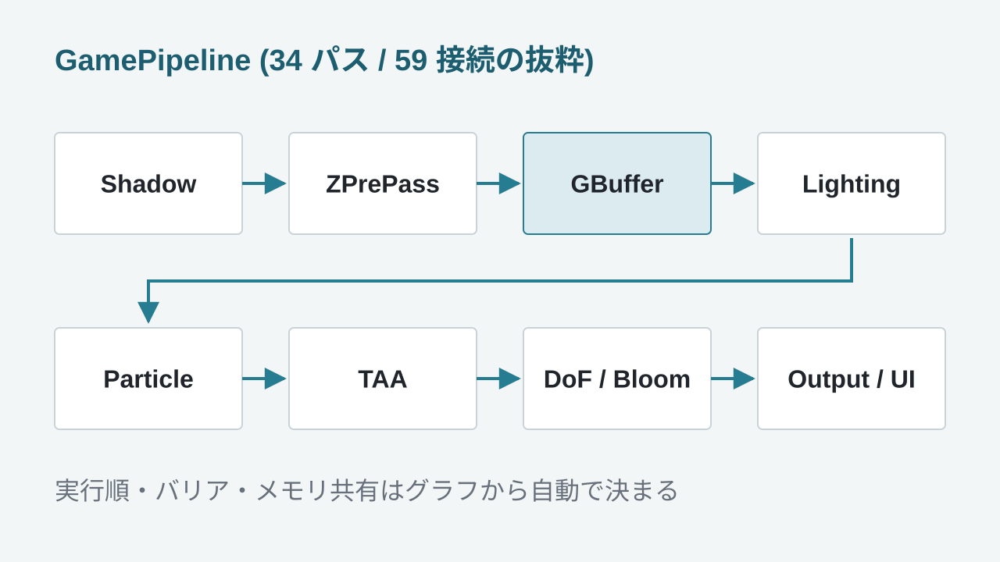
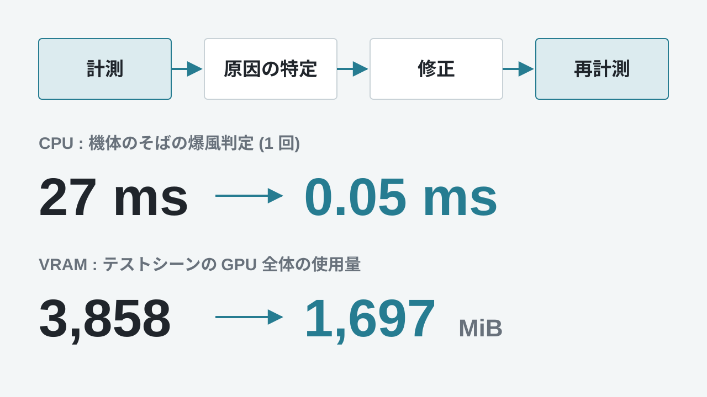
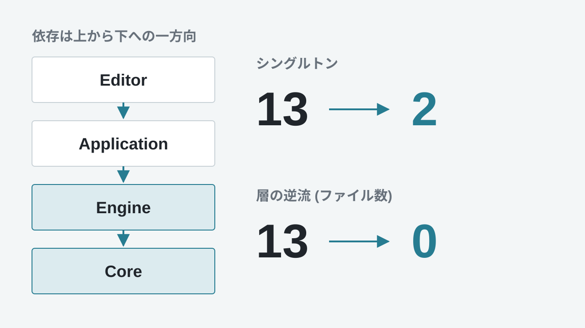

MAIN PROJECT / 3D ACTION
VECTOR REIGN
DirectX 12 の自作エンジンで動く、3D 高速メカアクション。エンジン・エディター・ゲームを約1年かけて個人で開発し、4,000 体の群れでできた巨大ボスとの戦いまで遊べる形に仕上げました。
作品を見る →GAME PROGRAMMER PORTFOLIO
ゲームプログラマーを目指す制作者のポートフォリオ
01
自己紹介
C++ と 3D ゲームプログラミングを軸に、DirectX 12 の自作エンジンでゲームを作っています。 描画だけでなく、ECS やジョブシステム、エディターまで一通り自分で作ってきました。
強みは、読みやすく保守しやすいコードを意識して書けることです。 ほかの人が見てすぐ理解できる形を、チーム制作でも個人制作でも心がけています。
プロフィール詳細 →02
作品紹介

MAIN PROJECT / 3D ACTION
DirectX 12 の自作エンジンで動く、3D 高速メカアクション。エンジン・エディター・ゲームを約1年かけて個人で開発し、4,000 体の群れでできた巨大ボスとの戦いまで遊べる形に仕上げました。
作品を見る →
MAIN PROJECT / 2.5D
宙に浮かぶ箱庭を、2D アクションの操作感で登っていくゲーム。Catmull-Rom スプラインに沿った移動とカメラワークで、世界を探索している感覚を目指しました。
作品を見る →GAME JAM / TEAM
30 秒でハンマーを振り回して街を壊し、稼いだお金でランクを競う破壊スコアアタック。殴った瞬間の気持ちよさを最優先にしたチーム制作です。
作品を見る →03
技術紹介




PERFORMANCE
CPU、GPU、VRAM を自作の計測ツールで調べ、原因を数字で特定してから直します。爆風の判定は 27 ms から 0.05 ms、VRAM は 3,858 MiB から 1,697 MiB になりました。
技術詳細を見る →
CODE QUALITY
規約を約 890 行の文書にまとめ、依存図と監査で確かめながら直しました。シングルトンは 13 個から、理由を説明できる 2 個まで減らしました。
技術詳細を見る →04
連絡先
ご覧いただきありがとうございます。